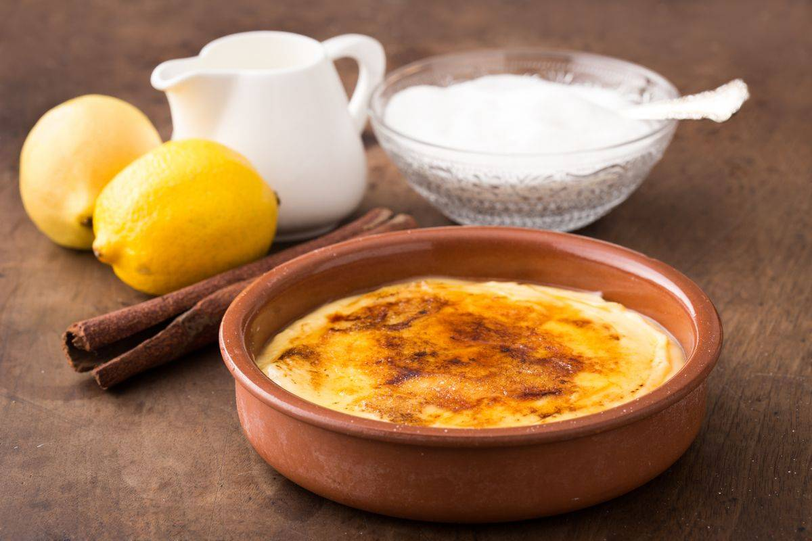

Receta de la Crema Catalana
Enlace a la pagina web

Como elaborar Link
Ingredientes
- Leche entera 1 L
- Yemas de huevo 8
- Azúcar 100 g
- Maicena 20 g
- Corteza de limon al gusto
- Corteza de naranja al gusto
- Azúcar para caramelizar al gusto
- Canela de rama 1
Como elaborar
- Comenzaremos cascando los huevos y separando la yema de las claras
- En una olla ponemos la leche a calentar con la corteza de limon, de naranja y la rama de canela.
- Por otra parte en un bol mezclamos removiendo bien, el azúcar y la Maicena, añadimos las yemas batidas y unimos todo con unas varillas.
- Cuando la leche rompa a hervir vertemos la mezcla de yemas, azúcar y maicena que la pasaremos por un chino o colador grueso. Removemos a fuego medio y sin parar de remover con una varilla para que no se nos pegue hasta que la mezcla vuelva a hervir de nuevo. Volcamos en unas cazuelitas individuales.
- Dejamos enfriar sin tapar y espolvoreamos con el resto del azúcar que habremos repartido entre nuestras cremas.
- Requemamos con un soplete de cocina hasta que el azúcar se caramelice. Servir fría.